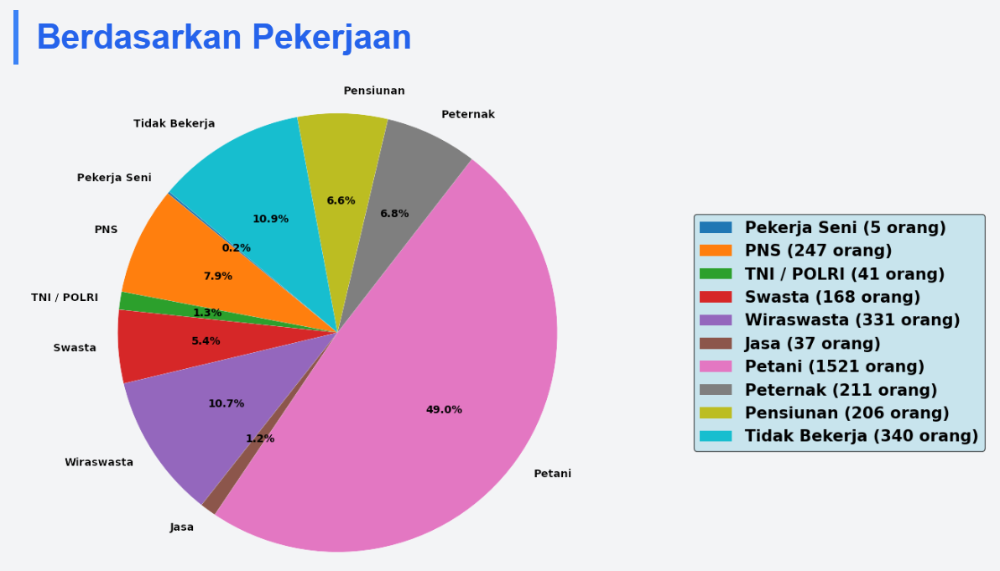
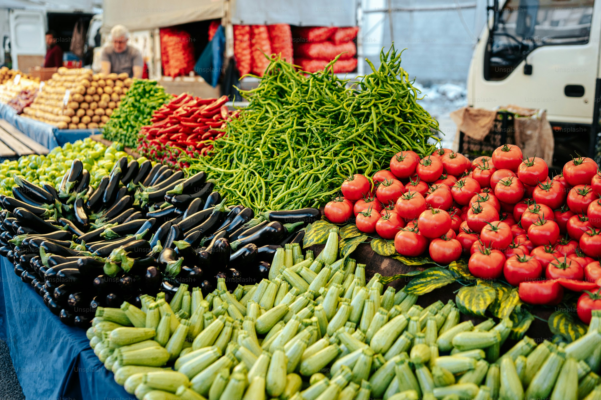

Jelajahi

Profil Desa
Profil Desa yang mencakup visi misi Desa dan struktur organisasi aparat desa, yang mencakup mulai dari Kepala desa, hingga kepala dusun masing-masing dusun

Infografis
Berisi penjelasan mengenai bagaimana infografis digunakan untuk menyampaikan informasi tentang desa, seperti data demografi dan fasilitas desa

UMKM
UMKM (Usaha Mikro Kecil dan Menengah) adalah usaha produktif yang dimiliki perorangan maupun badan usaha yang telah memenuhi kriteria sebagai usaha mikro

Potensi Desa
Potensi desa seperti sumber daya alam dan potensi alam yang bisa dikembangkan.